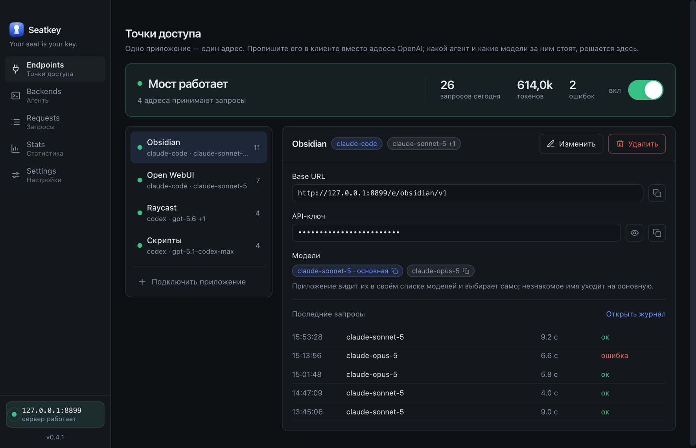
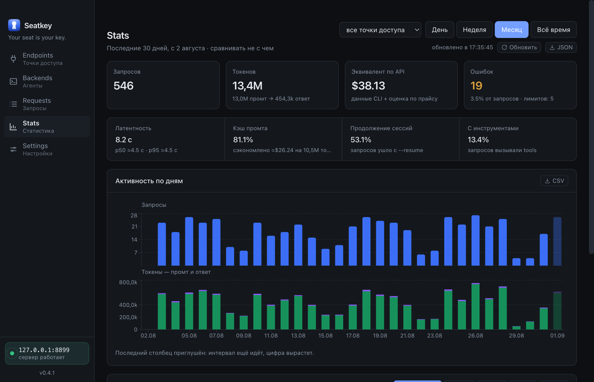
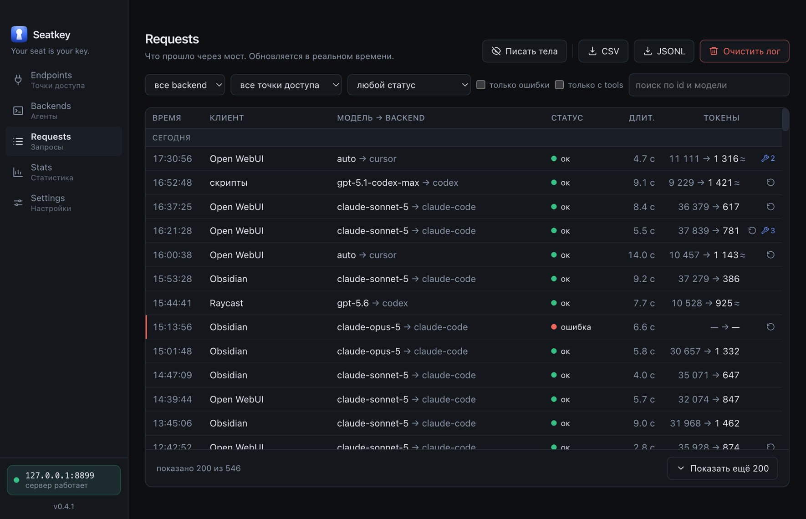

Seatkey локальный шлюз · macOS
Вы уже платите за
Claude Code, Codex или Cursor.
Пусть он работает
не только в чате.
Seatkey поднимает на вашем компьютере обычный OpenAI-адрес, а за ним стоит тот самый агент, за которого вы уже платите. Вставьте адрес в Obsidian, Open WebUI или свой скрипт — и они заработают.
macOS, Apple Silicon Агенту API-ключ не нужен Сервер только на 127.0.0.1

01 — в чём дело
За один и тот же ответ
вы платите дважды.
как это выглядит сейчас
Подписка на Claude Code, Codex или Cursor — фиксированная и уже оплачена. Но живёт она в терминале: в редакторе кода и в консоли.
Стоит захотеть ту же модель в заметках, в переводчике или в своём скрипте — и выясняется, что приложениям нужен «OpenAI API». То есть второй счёт, где деньги считают по токенам, и счётчик крутится с каждого вопроса.
Место в подписке при этом простаивает.
как это выглядит с Seatkey
Seatkey поднимает на вашем компьютере обычный OpenAI-совместимый адрес и выполняет запросы тем самым CLI, который у вас установлен и оплачен.
Приложение видит привычный /v1/chat/completions и не догадывается, что за ним стоит агент из терминала. Ключи API не нужны: запрос оплачивает подписка, которая у вас и так есть.
Второго счёта не появляется вовсе.
02 — подключение
Три поля, и приложение работает.
Seatkey выдаёт каждому приложению свой адрес и свой ключ. Дальше — обычная настройка «своего OpenAI-сервера», которая есть почти везде.
03 — деньги
Seatkey считает то,
чего нет в вашем счёте.
Каждый ход стоил бы денег, если бы шёл через API. Приложение берёт стоимость у самого агента — Claude Code сообщает её сам — и показывает, во что обошёлся бы тот же трафик по прайсу.

Столько стоил бы по прайсу API один запрос к Claude Code. Живой замер на моей машине: $7.74 за 75 запросов, цифру сообщил сам CLI.
Seatkey не покупает токены и не ходит в API. Запрос выполняет ваш агент — тот, за которого уже уплачено.
Claude Code, Codex CLI и Cursor Agent. Какой из них стоит за адресом, решаете вы — и в любой момент меняете, не трогая приложение. А если нужен не агент, за тем же адресом встаёт провайдер или ваш собственный сервис.
04 — не только подписка
За тем же адресом —
остальное, за что вы платите.
Подписка — не единственный ваш доступ. OpenAI-совместимый провайдер, локальная модель, корпоративный сервис со своим токеном: Seatkey держит их за тем же локальным адресом. Секреты к ним лежат в связке ключей ОС, а не россыпью по конфигам десятка приложений.
- Три вида точек
- За адресом стоит агент по подписке, как раньше, — или OpenAI-совместимый провайдер (DeepSeek, OpenRouter, локальные Ollama и LM Studio), или произвольный HTTP-сервис. У точек-прокси ключ обязателен, CORS не выдаётся, редиректы не следуются.
- Точка, которая не умирает
- У точки к агенту есть запасной провайдер: кончилась квота или агент недоступен — тот же адрес доводит запрос через него. Переключение происходит только до первого токена, и в журнале запрос виден обеими строками.
- Секреты — в связке ключей ОС
- Токены к внешним сервисам лежат в одном месте: срок действия на виду, о скором истечении приложение напомнит заранее. Ни в конфиг, ни в отчёт о проблеме секрет не попадает.
- Агент ходит в ваши сервисы сам
- Отмеченные доступы становятся его инструментами: он сходит в Jira или Jenkins, не увидев токена, — запрос выполняет Seatkey. Каждый такой поход остаётся в журнале: метод, путь, статус и то, чей токен предъявлялся.
05 — что происходит внутри
Видно каждый запрос.
Наружу — только то, что вы
сами туда направили.

Кто спросил, какой моделью, сколько это заняло и чем закончилось — журнал обновляется на глазах, пока приложение работает.
Тела запросов по умолчанию не пишутся. В базу идут только метаданные; сами промты и ответы появляются там, только если вы включите это сами — и остаются в локальной SQLite.
Сервер слушает 127.0.0.1, телеметрии нет. Запрос к агенту не покидает машину вовсе. Уйдёт он наружу только там, где вы этого сами захотели, — к провайдеру за точкой-прокси, к запасному апстриму, в Jira по инструменту агента, — и каждый такой поход стоит в журнале отдельной строкой.
Единственный запрос, который Seatkey делает по своей инициативе, — анонимная проверка обновлений, и её можно выключить.
06 — до того, как скачаете
Что честнее сказать сразу.
- Пока только macOS
- Сборка есть под Apple Silicon. Код кроссплатформенный, но дистрибутивов под Windows и Linux ещё нет.
- Подписку он не заменяет
- Нужен установленный и оплаченный агент — Claude Code, Codex CLI или Cursor Agent. Seatkey пользуется вашим, а не своим. Точку можно завести и к провайдеру со своим ключом — но тогда вы платите по его прайсу, и это уже не «бесплатно поверх подписки».
- Умеет не весь OpenAI API
- Нет embeddings, аудио и генерации картинок. У Cursor нет и картинок на вход. Всё, что CLI не умеет, возвращается понятной ошибкой до траты лимита, а не молчанием. Параметры, которые приняты, но ни на что не влияют, названы в заголовке
X-Seatkey-Ignored— а усилие на рассуждение, наоборот, доезжает до агента, иX-Seatkey-Effortговорит, с какой ступенью запрос ушёл на самом деле. - Ключ — на один компьютер
- Лицензия срочная и привязана к машине, проверяется без сети. Пока ключа нет, приложение работает, но запросы к моделям не проходят.
- Первая установка требует одного действия
- Сборка подписана самодельным сертификатом, а не Apple Developer ID: macOS один раз попросит подтвердить запуск.
07 — вопросы
То, что спрашивают первым.
Это не нарушает правила подписки?
Seatkey запускает официальный CLI провайдера как подпроцесс — на вашей машине, под вашей учётной записью, с вашей подпиской. Он не эмулирует их HTTP-API, не читает и не пересылает их токены, не открывает доступ никому, кроме вас: сервер слушает только 127.0.0.1.
Это ровно то же, что вы делаете руками в терминале, — но вызывает это ваше приложение вместо вас. Условия конкретного тарифа всё равно стоит прочитать самому: у провайдеров они разные и меняются.
Чем это лучше обычного API-ключа?
API-ключ считает деньги по токенам, и каждый вопрос из заметок стоит отдельно. Подписка уже оплачена и не считает ничего — Seatkey просто даёт до неё дотянуться.
Побочно: не нужно заводить второй счёт, следить за балансом и раскладывать секретный ключ по настройкам десятка приложений. Ключ у каждого приложения свой и локальный — отозвать его можно, не трогая остальные.
Мои переписки куда-то уходят?
Пока за адресом стоит агент — нет: всё происходит между вашими приложениями и вашим же агентом на этой машине. История запросов лежит в локальной базе, тела запросов не пишутся, пока вы не включите это сами.
Исключения заводите вы сами и явно: точка к внешнему провайдеру, запасной апстрим у точки к агенту, доступ, отмеченный инструментом агента. Тогда запрос, конечно, уходит туда, куда вы его направили, — и в журнале это видно отдельной строкой, вместе с тем, чей токен предъявлялся.
Единственный сетевой запрос по инициативе самого Seatkey — анонимная проверка обновлений на GitHub, без идентификаторов; выключается в настройках.
А если агент обновится и что-то сломается?
Seatkey общается с CLI так же, как человек: запускает бинарник и читает его вывод. Поэтому обновление агента обычно не ломает всё разом — отваливается что-то одно.
Когда это случается, видно, что именно: в журнале остаётся упавший запрос с текстом ошибки, а «Отчёт о проблеме» собирает в один файл версии, диагностику и последние запросы. Обновления самого Seatkey приходят по кнопке, установку он никогда не начинает сам — иначе перезапуск оборвал бы чужие запросы.
Windows и Linux будут?
Код кроссплатформенный, и приложение на них собирается — не выложены дистрибутивы. Если нужна сборка под вашу систему, напишите в issues: очередь определяется спросом.
Сколько стоит?
Сейчас ранний доступ. Приложение платное, ключ выдаётся по запросу и привязывается к вашему компьютеру; об условиях договариваемся в переписке.
Скачать и посмотреть можно уже сейчас: интерфейс, настройки и диагностика работают без ключа — закрыты только сами запросы к моделям.
08 — забрать
Ранний доступ.
Скачайте сборку и попросите ключ — я выпускаю его на отпечаток вашего компьютера, который приложение показывает само.
macOS, Apple Silicon ~130 МБ дальше обновляется само
- Распакуйте архив и перенесите Seatkey.app в «Программы».
- Откройте приложение. macOS попросит подтвердить запуск: Системные настройки → «Конфиденциальность и безопасность» → «Всё равно открыть». Один раз.
- Скопируйте адрес первой точки доступа и вставьте его в своё приложение. Ключ лежит там же, рядом.